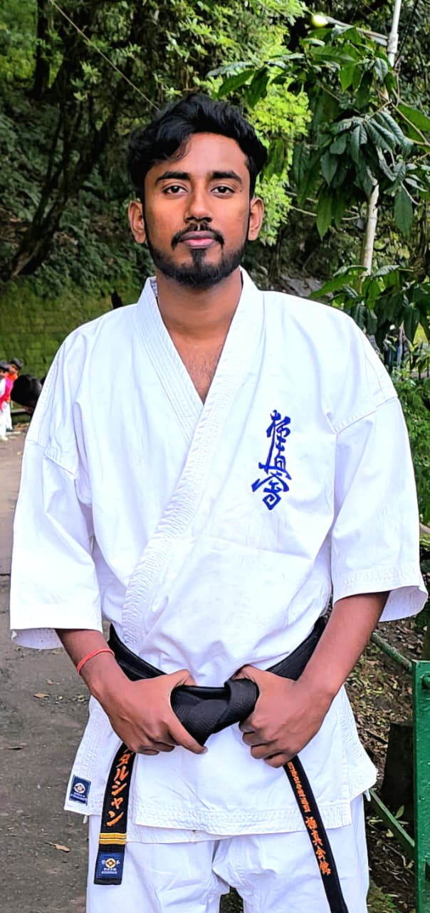

2ND DAN
Mr. Sudarshan Mandal
Mr. Sudarshan Mandal is a second degree black belt karateka.
He is associated with Kyokushin Karate since 2001 and received his second degree Black Belt on Sept-1,2019 under the guidance of Sensei Satyeswar Mandal.
He is presently a referee and also an active participant in all tournaments organized under IKO Matsushima Group.
His recent achievement includes obtaining the runners up position in the Lower Heavy Weight Category of the All India Kyokushin Karate Knockdown Open Tournament, held at Bangalore, 2024.